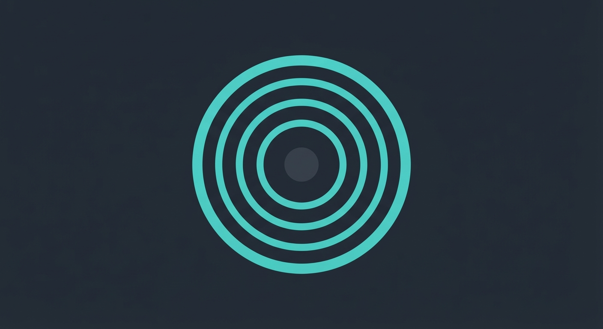
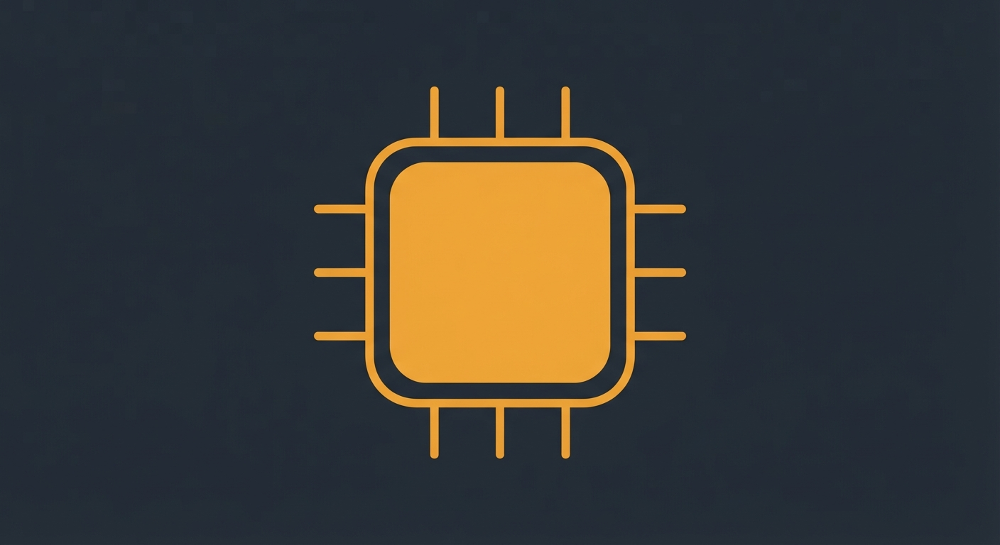
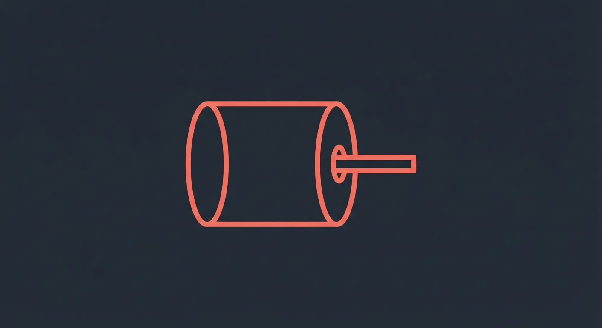
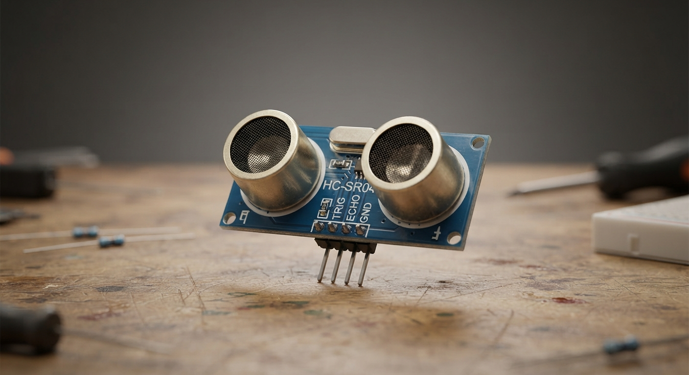
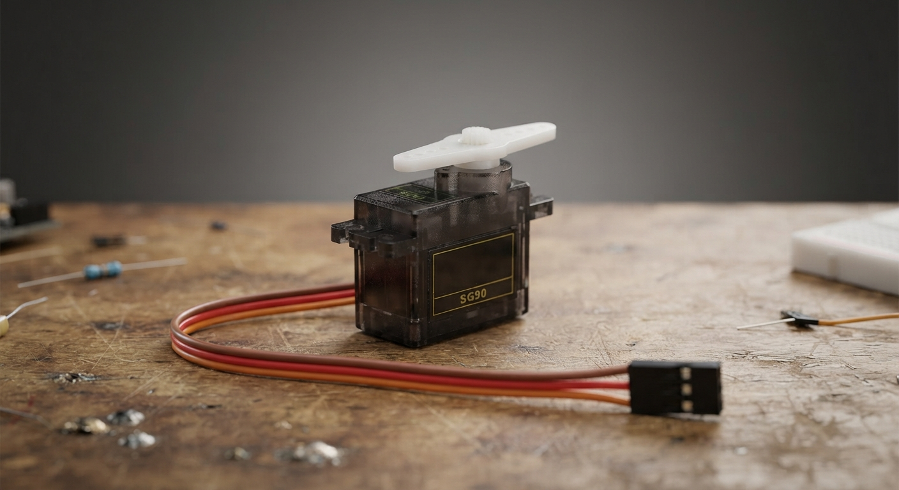

MISIÓN · MÓDULO 1
Diagnóstico del robot R-07
El robot R-07 dejó de responder en medio de una prueba. Tu misión, como técnico/a de campo, es revisar sus tres sistemas, percepción, decisión y acción, para encontrar qué falló.
Conectando con R-07... [AVISO] El robot no reacciona a estímulos. Diagnóstico requerido. Cargando expediente técnico de sus tres sistemas... Listo, agente. Empezá por identificarte.
Objetivo: al terminar esta misión, vas a poder identificar sensores, actuadores y el controlador de un robot, y explicar cómo se relacionan entre sí para resolver una falla.
Público: estudiantes del Laboratorio de Robótica. Nivel inicial, sin conocimientos previos de electrónica ni de programación.
-

Sensor
-

Controlador
-

Actuador
01, MAPA DEL LABORATORIO
Mapa de los sistemas de R-07
Elegí una zona para empezar el diagnóstico. Cada zona se desbloquea al terminar la anterior.
Diagnóstico completado: 0%
ZONA 01
Sistema de percepción
Sensores: lo que el robot siente
ZONA 02
Sistema de acción
Actuadores: lo que el robot hace
ZONA 03
Sistema de decisión
Controlador: el cerebro del robot
ZONA 04
Núcleo de R-07
Desafío final: los tres sistemas juntos
ZONA 01
Sistema de percepción: los sensores
Revisá cómo R-07 siente el ambiente y resolvé los chequeos de esta zona.
Un sensor es una pieza que capta información. El sensor mide algo del ambiente. Por ejemplo: la luz, la distancia o el color.
- Sensor de distancia. Mide qué tan cerca está un objeto.
- Sensor de luz. Mide si hay luz o sombra.
- Sensor de color. Reconoce colores como negro o blanco.

Protocolo de diagnóstico
Chequeo 1 · Identificación
Chequeo 2 · Verdadero o falso
Chequeo 3 · Inventario de sensores
Zona revisada. Se habilitó el siguiente sector de R-07.
ZONA 02
Sistema de acción: los actuadores
Revisá cómo R-07 se mueve y actúa y resolvé los chequeos de esta zona.
Un actuador es una pieza que produce un movimiento o una acción. El actuador recibe una orden. El actuador cumple esa orden.
- Motor. Hace que el robot se mueva.
- Led. Enciende una luz.
- Parlante. Emite un sonido.

Protocolo de diagnóstico
Chequeo 4 · Pieza que mueve
Chequeo 5 · Pieza que ilumina
Zona revisada. Se habilitó el siguiente sector de R-07.
ZONA 03
Sistema de decisión: el controlador
Revisá cómo R-07 decide qué hacer y resolvé los chequeos de esta zona.
El controlador es el cerebro del robot. Recibe la información de los sensores, decide qué hacer y manda la orden a los actuadores.
El controlador tiene un programa. El programa dice, paso a paso, qué debe hacer el robot en cada situación.
Protocolo de diagnóstico
Chequeo 6 · Núcleo de decisión
Chequeo 7 · La decisión
Zona revisada. Se habilitó el siguiente sector de R-07.
ZONA 04
Núcleo de R-07: desafío final
Último sector. Reconstruí cómo trabajan juntos los tres sistemas y devolvele la vida a R-07.
- El sensor capta información.
- El controlador recibe esa información y decide.
- El actuador ejecuta la acción.
Ejemplo: un sensor de distancia detecta un obstáculo. El controlador decide frenar. El motor (actuador) frena el robot.
Protocolo de diagnóstico
Chequeo 8 · Secuencia completa
Chequeo 9 · Frenar a R-07
Diagnóstico terminado. R-07 volvió a responder.